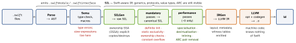

swift · folio
In one line: The frontend parses, type-checks (a constraint solver), lowers to SIL — Swift’s own IR that still sees generics, ownership and ARC — runs mandatory then performance passes, then emits LLVM IR. At run time every type has metadata; generic and protocol code goes through value/protocol witness tables unless the optimiser could specialise it, which needs the body visible.
Download PDF Print view LaTeX source


Compiler
- Per-file vs WMO. Debug: one frontend job per file (“primary file”), incremental via a dependency graph — fast edits, no cross-file optimisation. Release: whole-module optimisation — one job sees every file: cross-file inlining, devirtualisation, specialisation, dead-code removal.
-Ononekeeps every check and no inlining;-Ospeed;-Osize;-Ouncheckeddrops overflow/precondition checks. Never benchmark Debug.- Module boundary hides bodies.
@inlinableships the body (SIL / in the.swiftinterface) so clients can inline and specialise; everyinternalsymbol it touches needs@usableFromInline. The body is then part of your ABI — old clients keep the old copy until they rebuild. - ABI stability (Swift 5.0, Apple platforms): calling convention, mangling (
$s…), metadata and witness-table layout frozen — the runtime ships in the OS (iOS 12.2+), apps stopped bundlinglibswiftCore. - Module stability (Swift 5.1): the textual
.swiftinterfaceimports into later compilers. Build settingBUILD_LIBRARY_FOR_DISTRIBUTIONturns on both it and library evolution. - Library evolution / resilience: clients may not bake in a type’s layout — they ask metadata for size and use accessors, so the library can add stored properties or cases. Public non-
@frozenenums force@unknown default.@frozen= layout promise forever. Apps and source packages pay nothing. - Lexical lifetimes (5.7):
-Ono longer ends a variable’s life early, so “deinit fires sooner in Release” is mostly gone.
Example — a library that ships to clients
public struct Stack<Element> {
@usableFromInline internal var items: [Element] = []
public init() {}
@inlinable public mutating func push(_ e: Element) {
items.append(e) } // body ships: client specialises
public mutating func pop() -> Element? {
items.popLast() } // opaque: witness-table path
}
@frozen public enum Axis { case x, y } // exhaustive switch OK
// type-checker: annotate + split one giant expression
let part: Double = a * 2 + b / 3
let total: Double = part - Double(c) + e * 1.5An unspecialised generic call
Runtime
- Type metadata: one record per type — kind, VWT pointer, generic arguments; classes add superclass + vtable and are ObjC-
isacompatible (the instance’s first word). Generic instantiations (Array<User>) are built lazily by the runtime and cached. - VWT: how to copy/move/destroy a value of unknown type. For a trivial specialised type these become
memcpyor vanish. - PWT: one per (type, protocol) conformance, an entry per requirement. Conformance records live in the binary;
as? Psearches them (cached; iOS 16’s dyld precomputes them). - Dispatch:
final/private/structs/extension methods = direct · class = vtable · protocol/generic = PWT ·dynamic=objc_msgSend. any P= 3-word inline buffer + metadata + 1 PWT per protocol (boxed if larger) — seeownership-and-memory-layout.- Swift generics are not C++ templates: zero-cost only when specialised (same module, WMO, or
@inlinable).
Traps
- “Compiles forever”: long mixed-literal / overloaded-operator expressions (huge SwiftUI bodies too) explode the solver. Find:
-Xfrontend-warn-long-expression-type-checking=100, Build With Timing Summary. Fix: annotate, split. - ARC reasoning belongs to SIL, not LLVM IR. A bug fix in an
@inlinablebody never reaches clients that inlined the old one. - Stride ≠ size:
(Int64, Int8)is size 9, stride 16.
Remember
“Parse, check, SIL twice, IR, link.” Metadata says what, VWT says how to copy, PWT says which method.